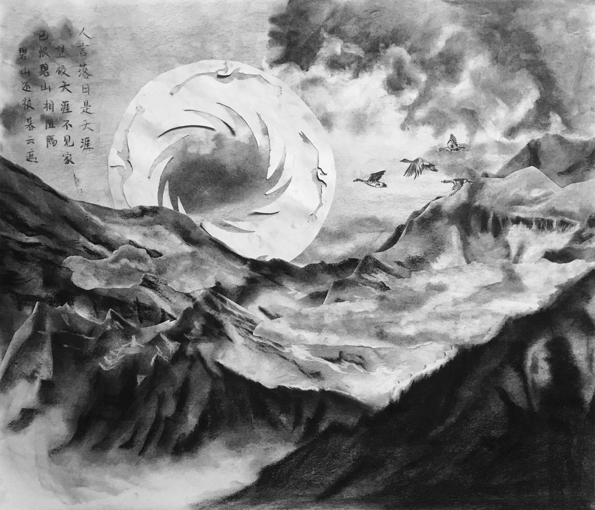

A Compilation of
CHARCOAL
DRRAWINGS
CHARCOAL
DRRAWINGS
I first got to know charcoal drawing in 2017. I've never tried to draw on such a big paper before. The movement of arms and the body are involved in the process of making those drawings. I did most of these in freshman year at RISD. The prompts given are very creative and open which also motivate me to pay attention to the little things around me and also myself.



Nostalgia, 2018, 36"x30"
Shangqing Palace, 2017, 24"x36"
Nature, 2018, 24"x36"

Frankenstein, 2018, 24"x36"

"Self Portrait", 2018, 24"x36"